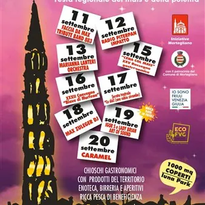

da ven 11 set a dom 20 set
Festeggiamenti settembrini
I festeggiamenti settembrini di Mortegliano si svolgono dal 11 al 20 settembre 2026. Il programma offre vari eventi di musica dal vivo, sportivi come il “Week end della Salute”, iniziative culturali come il convegno "Blave di Mortean" e gastronomia con prodotti del territorio.
 Indicazioni
Indicazioni
- Costi e prenotazioni
- Costo non indicato · Prenotazione non indicata
- Programma
- Programma da verificare. Apri la fonte ufficiale per orari e possibili aggiornamenti.
- In caso di maltempo
- Nessuna indicazione specifica pubblicata.
- Note
- Acquisito automaticamente dalla fonte.
L’EVENTO
Descrizione completa
I festeggiamenti settembrini di Mortegliano si svolgono dal 11 al 20 settembre 2026. Il programma offre vari eventi di musica dal vivo, sportivi come il “Week end della Salute”, iniziative culturali come il convegno "Blave di Mortean", gastronomia con prodotti del territorio.
Ore 18.30 - Apertura Chiosco Punto Giovani - Serata PESTATI
Ore 19.30 - Inaugurazione FESTEGGIAMENTI SETTEMBRINI 2026
Ore 21.00 - Concerto “Faccia da MAX – Tribute band 883”
Ore 15.30 - Pomeriggio per bambini - Gonfiabili e truccabimbi
IL PROGRAMMA
Programma e orari
Appuntamenti raccolti dalle fonti elencate. Dove manca un orario, non è ancora disponibile in questa scheda.
Programma pubblicato
- Ore 18.30 - Apertura Chiosco Punto Giovani - Serata PESTATI
- Ore 19.00 - Apertura Chioschi Enogastronomici
- Ore 19.30 - Inaugurazione FESTEGGIAMENTI SETTEMBRINI 2026
- Ore 21.00 - Concerto “Faccia da MAX – Tribute band 883”
- Ore 09.00 - WEEK END DELLA SALUTE IN MOVIMENTO
- Ore 09.30 – Partenza passeggiata:
- Ore 15.30 - Pomeriggio per bambini - Gonfiabili e truccabimbi
- Ore 16.30 – Spettacolo “Gran varietà di marionette e altre diavolerie”
- Ore 18.00 - “2° TROFEO ALPEA DR3” a cura della Sport System
- Ore 18.00 e ore 20.00 semifinali presso la Palestra
- Ore 18.00 - Apertura Chiosco Punto Giovani con DJ Set
- Ore 21.30 - SERATA GIOVANI CON “RADIO PITERPAN IMPATTO”
- Ore 08.30 - WEEK END DELLA SALUTE IN MOVIMENTO
- Ore 09.45 – GYMCA – La ginnastica che cammina
- Ore 12.00 - Apertura chioschi enogastronomici
- Ore 18.00 - “TROFEO ALPEA DR3” a cura della Sport System
- ore 17.00 - Finale 3° e 4° posto
- ore 19.00 - Finale 1° e 2° posto
- Ore 18.00 - Apertura Chiosco Punto Giovani
- Ore 18.30 - Apertura Chioschi Enogastronomici
- Ore 21.00 - Orchestra “Marianna Lanteri”
- Ore 19.30 - “Cucina col mais” XXV RASSEGNA GASTRONOMICA
- Ore 20.30 - XXXII Convegno “BLAVE DI MORTEAN”
- Ore 20.30 - Serata teatrale “Ce dôi!” (une cùbie strambe)
- Ore 18.30 - Apertura Chiosco Punto Giovani
- Ore 20.00 - Briscolissima. Premi enogastronomici della Latteria di Mortegliano presso tendone Enoteca
- Ore 21.00 – Serata DJ “MAX ZULEGER DJ” con tutta la musica ’80 ’90 ’00 italiana e straniera
- Ore 15.30 - POMERIGGIO PER BAMBINI con i giochi Gonfiabili
- Ore 16.00 – Giochi ed attività con il Gruppo “Ragazzi si Cresce”
- Ore 17.00 – Animazione per bambini MARZIART con bolle di sapone e truccabimbi
- Ore 18.30 - Apertura Chiosco Punto Giovani con DJ SET
- Ore 21.00 – Special Event “IGOR S e LADY BRIAN” aprono la serata “ART OF SOUND”
- Ore 09.30 - “5ª Mortean pedala - Famiglie in bicicletta 2026”
- Ore 12.00 - Apertura Chioschi Enogastronomici - Pranziamo
- Ore 16.00 - Spettacolo di magia con “MAGO LEO”
- Ore 17.00 – Balli di gruppo con “CUORI IN PISTA”
- Ore 18.00 - APERTURA Chiosco Punto Giovani - Apertura Chioschi Enogastronomici
- Ore 18.30 – DOMUS MUSICAE – Concerto “Inno alla Vita”
- Ore 20.30 - SERATA DANZANTE CON L’ORCHESTRA “CARAMEL”
- Ore 22.30 - Tombolissima estrazione a cura di DARIO ZAMPA. Nuovo Montepremi 2000 euro
INFORMAZIONI UTILI
Prima di partire
- Controllare la fonte prima di partire.
ORGANIZZAZIONE